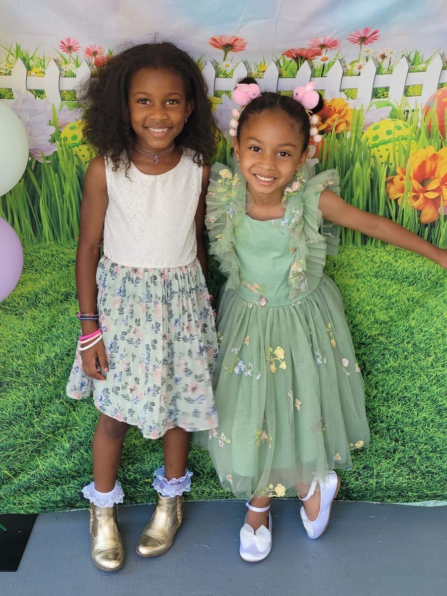
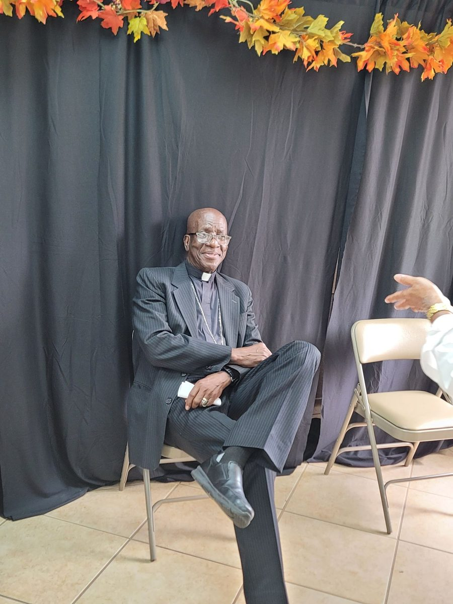
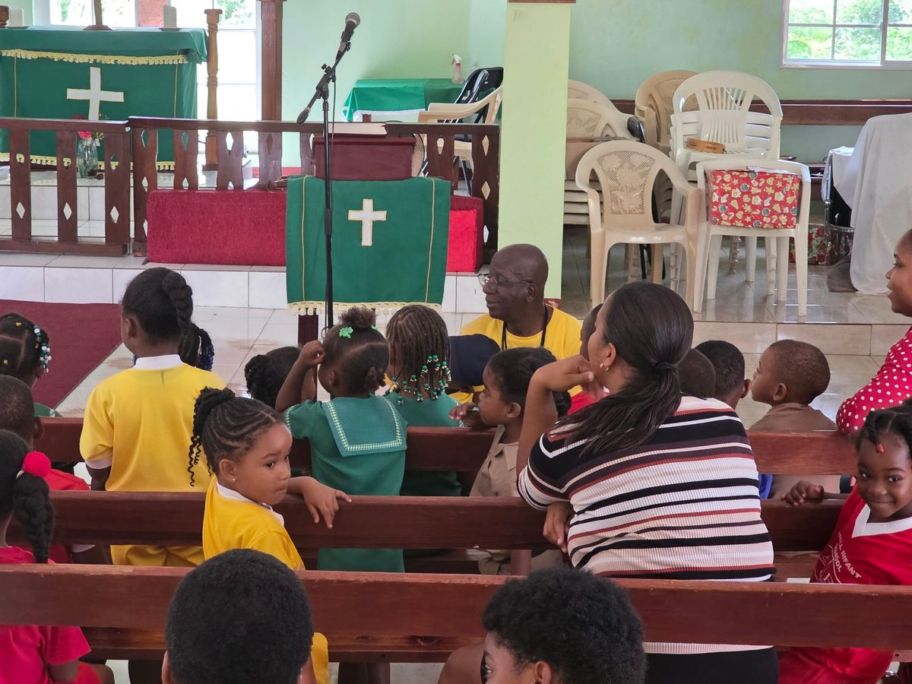

Saturday
19 Sept
Family Picnic
12:00 PM to 6:00 PM
An afternoon on the grounds with food, games, and room for the children to run.
Holy Sacrament Episcopal Church
Two days of fellowship, praise, and food from around the world. September 19 and 20 in Pembroke Pines.
Three gatherings across two days. Come for one, come for all of them.
Saturday
19 Sept
12:00 PM to 6:00 PM
An afternoon on the grounds with food, games, and room for the children to run.
Sunday
20 Sept
9:30 AM
Our anniversary celebration of the Eucharist, with the choir and the whole parish family together.
Sunday
20 Sept
11:30 AM
Twenty six dishes from the countries our parish calls home, served right after the service.
A weekend this size runs on what the parish carries in. The sign up sheet shows what is still needed and who has claimed what.
Baptisms, choir robes, church suppers, and every Sunday in between. Add yours to the shared album so the whole parish can see them.


